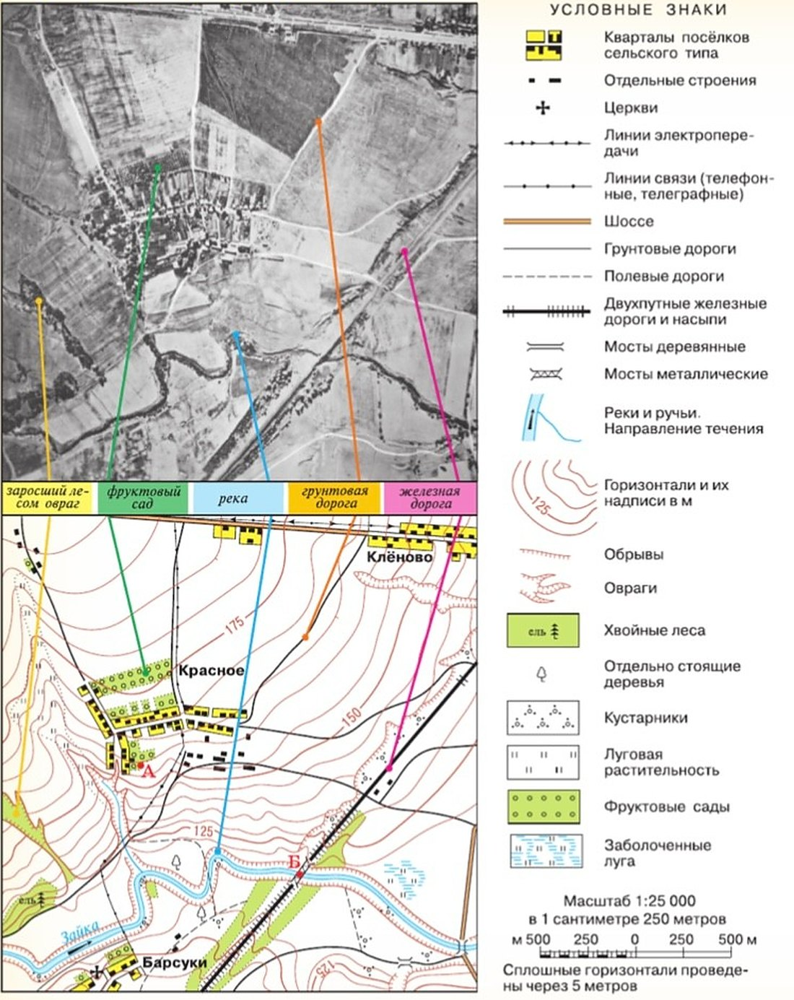
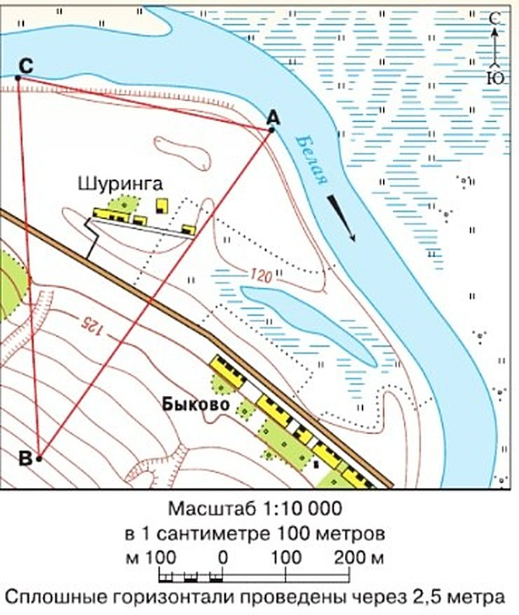
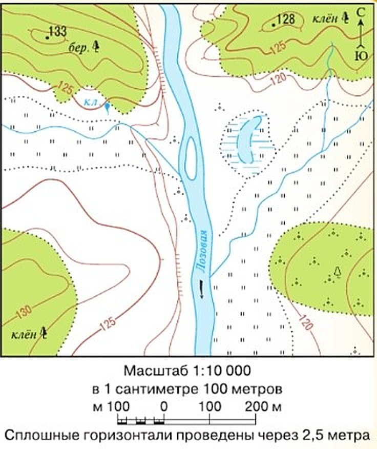

Работаем с картой
Этот параграф — практикум, итог раздела «План и карта». Пора проверить, что ты уже умеешь: находить направления, мерить расстояния по масштабу, понимать, что где расположено, определять координаты и находить точку по координатам, узнавать высоты и глубины по горизонталям, описывать местность по топографической карте.
Понадобятся атлас, контурная карта полушарий, простой и цветные карандаши, ластик, ручка, линейка и тетрадь. Задания — по указанию учителя.
Каждый из вас должен научиться пользоваться планом и картой:
1. Определять направления на плане и карте.
2. Определять расстояния на плане и карте с помощью масштаба.
3. Определять взаиморасположение объектов на плане и карте.
4. Определять географические координаты точки на карте.
5. Находить точку на карте по её географическим координатам.
6. Определять абсолютные высоты и глубины на плане и карте.
7. Составлять описания местности по топографическим картам.
Выполните задания (по указанию учителя). Вам понадобятся: географический атлас, контурная карта полушарий, простой и цветные карандаши, ластик, ручка, линейка, тетрадь или блокнот для записей.
1. Какие из семи умений ты уже пробовала — и в каких параграфах?
Задание I. План и карта: чем различаются?
Сравни план местности и географическую карту. Ответ оформи таблицей: слева — план, справа — карта.
Если хочется проверить себя, дома можно нарисовать схему различий: выбрать ключевые слова (например, более мелкий масштаб), расставить по порядку и связать стрелками. Можно на компьютере.
I. Сравните план местности и географическую карту. Чем они различаются? Результат оформите в виде таблицы.
Тот, кто хочет проверить свои способности, может дома попробовать составить схему, отражающую различия между планом и картой. Для этого нужно определить ключевые слова или словосочетания (например, более мелкий масштаб) и распределить их в правильном порядке. Связь между составными частями схемы покажите стрелками. Схему можно составить в электронном виде, т. е. на компьютере.
| План местности | Географическая карта | |
|---|---|---|
| Масштаб | … | … |
| Какая территория | … | … |
| Насколько подробно | … | … |
| Как найти направления | … | … |
| Градусная сетка | … | … |
| План местности | Географическая карта | |
|---|---|---|
| Масштаб | крупный — от 1 : 5000 и крупнее | мелкий, например 1 : 20 000 000 |
| Какая территория | небольшой участок: двор, село, парк | большие пространства: страна, материк, вся Земля |
| Насколько подробно | видны отдельные дома, деревья, тропинки | только крупные объекты, многое обобщено |
| Как найти направления | по стрелке «север — юг» | по меридианам и параллелям |
| Градусная сетка | нет | есть |
| Кривизна Земли | не учитывают: участок почти плоский | учитывают — есть искажения |
2. Почему на плане хватает стрелки «север — юг», а на карте полушарий направления ищут по сетке?
3. Почему на плане видно отдельное дерево, а на карте России — нет?
Задание II. Описываем маршрут похода
Нужно описать поход по топографической карте на рис. 35 (§ 13).
Маршрут: утром встречаемся у церкви в Барсуках, спускаемся к реке Зайке, плывём на лодке вниз по течению до деревянного моста. Дальше пешком — к селу Клёново, остановка у железнодорожной насыпи.
Ответь письменно: куда плывём и сколько проходим; что видно на правом и левом берегах; на каком берегу большое село и как оно называется; куда идём после лодки; ровная дорога, спуск или подъём; что к северо-западу от насыпи?
И о безопасности: какие опасности на маршруте, что сделать заранее и что обязательно взять в рюкзак?
II. Составьте описание маршрута по топографической карте на рисунке 35 (с. 48).
Мы отправляемся в поход. Утром собираемся у церкви в селе Барсуки, затем спускаемся к реке Зайке и отправляемся на лодке вниз по её течению до деревянного моста. Далее пойдём пешком до села Клёново. У железнодорожной насыпи сделаем остановку.
Ответьте письменно. Описание должно содержать ответы на следующие вопросы:
В каком направлении нам предстоит плыть? Какое расстояние нам предстоит пройти? Какие объекты мы встретим на правом и левом берегах реки, проплывая на лодке? На каком берегу реки мы увидим большое село? Как оно называется? В каком направлении нам предстоит двигаться после того, как сойдём с лодки? Как вы думаете, нам придётся двигаться по ровной местности, спускаться вниз или подниматься вверх? Что мы увидим к северо-западу от железнодорожной насыпи?
Какие опасности могут ожидать нас на этом маршруте? Какие меры безопасности следует принять заранее? Что должно быть обязательно в рюкзаке у каждого?

▲ Найди церковь в Барсуках, стрелку течения на Зайке, деревянный мост и Клёново.
Опасности: вода (жилеты в лодке), железная дорога (переходить только в положенном месте), обрывы и овраги, клещи и комары в лугах, солнце или дождь. В рюкзак: вода и еда, аптечка, дождевик, головной убор, средство от клещей и комаров, карта и компас, заряженный телефон, пакет для мусора.
4. Зачем в задании II знать, куда течёт река?
5. Как по карте понять, что после лодки придётся идти в гору?
Задание III. Эстафета по топографической карте
Рис. 48. По масштабу измерь расстояния по прямой: а) от B до A; б) от B до C. Определи абсолютную высоту точки B.
Эстафета: от C до A бежит Наташа, от A до B — Андрей, от B до C — Егор. Какой этап самый простой, какой самый сложный и почему? Опиши каждый отрезок письменно, не больше трёх предложений.
III. Изучите топографическую карту на рисунке 48. С помощью масштаба определите расстояние по прямой: а) от точки В до точки А; б) от точки В до точки С.
Определите абсолютную высоту точки В.
Представьте, что трое ребят во время спортивной игры проходят эстафету. От точки С до точки А движется Наташа; от точки А до точки В — Андрей; последний отрезок маршрута — от точки В до точки С — достался Егору.
Какой из этапов эстафеты вам кажется самым простым; самым сложным? Почему? Ответьте письменно. Постарайтесь описать особенности каждого отрезка маршрута не более чем тремя предложениями.

▲ Найди горизонтали 120 и 125. В какую сторону от них лежит точка B — к реке или от реки?
Эстафета. Наташе проще всего: отрезок самый короткий и почти ровный — по лугу вдоль реки. Андрею труднее всего: отрезок самый длинный, через дорогу и всё время вверх по склону. Егору — вниз по склону, но через овраг и дорогу: бежать легче, чем Андрею, но надо смотреть под ноги.
6. Как по горизонталям понять, где склон круче?
7. Почему Андрей и Егор бегут по одному и тому же склону, а этапы у них разные по трудности?
Задание IV. Проект: как освоить участок
Проектное задание — одной, с другом или в группе, как скажет учитель.
Большая фирма купила участок (рис. 49). Варианты: сельское хозяйство, жилой посёлок или зона отдыха со спортивным комплексом. Нужно выбрать лучший и объяснить почему.
Сначала изучи участок: 1) есть ли на нём что-то, построенное людьми? 2) где холмы, а где ровно, крутые склоны или пологие? 3) где пашня, сенокос, дома, лыжная трасса, что ещё можно придумать? 4) где и какую дорогу провести? 5) как использовать реку, нужен ли мост?
Советы учебника. В посёлке и спорткомплексе нужны вода и электричество. Многие продукты можно выращивать в своём хозяйстве. Рабочим нужен домик, где помыться и пообедать, и помещение для техники. Дорогу ведут по ровным местам и без петель. Крутые склоны не распахивают. Пристань на реке может пригодиться.
Выступление. 1) План: коротко об участке, твой вариант, по пунктам — почему. 2) Говори чётко, место объясняй словами «севернее…», «к западу от…». 3) Поблагодари слушателей и спроси, есть ли вопросы.
IV. Вам предстоит выполнить проектное задание. По указанию учителя вы будете работать самостоятельно, или с товарищем, или в группе.
Крупная фирма приобрела земельный участок. Она предполагает вложить средства или в сельскохозяйственное производство, или в строительство жилого посёлка, или в создание зоны отдыха со спортивным комплексом. Ваша задача — выбрать наилучший вариант освоения земельного участка, план которого вы видите на рисунке 49. Выбор следует обосновать.
Для решения поставленной задачи нужно вначале внимательно познакомиться с участком. Постарайтесь ответить на вопросы:
1. Есть ли на участке какие-нибудь объекты, уже построенные человеком?
2. Где находятся холмистые участки, а где — ровные? Крутые или пологие склоны у холмов?
3. Какие участки подходят: а) для распашки под поля; б) под сенокосы; в) для строительства домов; г) для лыжной трассы; д) для других объектов (предложите)?
4. Где и какую нужно проложить дорогу?
5. Как можно использовать протекающую реку? Нужно ли строить мост?
Полезные советы: Обратите внимание на некоторые важные условия. Например, в посёлке или в спорткомплексе необходимы вода и электричество. Многие продукты питания можно производить в своём хозяйстве. Сельскохозяйственные рабочие должны иметь небольшой домик, где можно вымыться и пообедать, а также помещение для хранения техники и инструментов. Дорога должна проходить по ровным участкам и не петлять. Крутые склоны не распахивают. Пристань на реке может очень пригодиться.
Когда вы обоснуете для себя выбор решения, начинайте готовить сообщение (презентацию):
1. Составьте план выступления. Начните с краткого описания участка. Предложите ваш вариант освоения. Перечислите по пунктам, какие качества территории способствовали вашему выбору.
2. Стройте своё выступление грамотно. Старайтесь произносить слова чётко, чтобы все слышали. Говоря о местоположении объектов, употребляйте выражения «севернее...», «к западу от...» и т. д.
3. Поблагодарите слушателей за внимание, спросите, есть ли к вам вопросы.

▲ Найди самую высокую точку участка и место, где у реки обрыв.
8. Почему крутые склоны не распахивают?
9. Почему дорогу лучше вести по ровным местам и без петель?
Обобщение по теме «План и карта»
Это итог всего раздела «План и карта» — параграфов 12—20.
Человеку нужно уметь ориентироваться — понимать, где он находится. Ориентироваться можно по природным объектам, по компасу или по навигатору, который получает данные со спутников.
Чтобы хранить и передавать сведения о Земле, есть географические модели: план местности, глобус, карты — и бумажные, и электронные. У них свой язык — условные знаки — и всё уменьшено в определённом масштабе.
Самая точная модель Земли — глобус. План показывает небольшой участок, карта — большие пространства. На глобусе и картах есть сетка из параллелей и меридианов: по ней определяют координаты.
Всё чаще для ориентирования мы пользуемся компьютерами и телефонами. Но уметь работать с планом и картой нужно каждому.
Человеку необходимо уметь ориентироваться в пространстве, чтобы определять своё местоположение. Ориентироваться можно по природным объектам, с помощью традиционного компаса или современного навигатора, использующего данные сложных спутниковых систем.
Для закрепления и передачи наглядной информации о Земле — её поверхности, объектах и явлениях — существуют географические модели: план местности, глобус, географические карты, в том числе в электронном виде. В них используют особый графический язык — условные знаки — и уменьшение в определённом масштабе.
Самая точная модель Земли — глобус. На плане отображаются небольшие участки местности, на картах — большие по площади пространства. На глобусе и картах проведена градусная сеть из параллелей и меридианов. С её помощью определяют географические координаты объектов.
Всё чаще в повседневной жизни мы используем возможности компьютерных технологий для ориентирования в пространстве. Умение работать с планом, картой необходимо каждому современному человеку.
- Начните собирать в «семейный географический портфель» планы городов, географические атласы, путеводители.
- Вместе с родителями разработайте по карте маршрут летнего отдыха или по плану города маршрут воскресной прогулки.
- Выберите любую карту из атласа и дайте её характеристику по плану: а) название карты; б) масштаб; в) что можно узнать по легенде карты.
Не забудьте отметить свои достижения! В тетради отметь, что ты узнала и чему научилась в разделе «План и карта».
10. Почему самая точная модель Земли — глобус, а не карта?
11. Что из раздела помогает узнать, где ты находишься, если нет телефона?
Проверь себя
Масштаб 1 : 500
Крупный масштаб — небольшой участок.
Вся Россия
Большие пространства.
Стрелка «север — юг»
На карте направления — по сетке.
Градусная сетка
На плане её нет.
Видно отдельное дерево
План подробный.
Материки и океаны
Очень мелкий масштаб.
Школьный двор
Небольшой участок.
Искажения у полюсов
Как шкурка апельсина (§ 17).
Расстояние от B до A
Сантиметры × 100 м на рис. 48.
Высота точки B
Каждая линия — 2,5 м.
Координаты Москвы
Широта и долгота.
Крутой склон или пологий
Густые — круто.
Длина пути на лодке
Ниткой по изгибам и к масштабу.
Долгота Тольятти
Около 49° в. д.
Где холм, а где ровно
Замкнутые кольца — холм.
1. В масштабе 1 : 10 000 в 1 см…
2. Как определить левый берег реки?
3. Горизонтали через 2,5 м. Точка — на второй горизонтали выше подписи 125. Какая у неё высота?
4. Какая модель Земли самая точная?
5. Где показывают небольшой участок со всеми подробностями?
6. Как лучше проложить дорогу по участку?
Расскажи вслух
План и карта
- План — небольшой участок, крупный масштаб, стрелка «север — юг».
- Карта — большие пространства, мелкий масштаб, градусная сетка.
- Самая точная модель Земли — глобус.
Поход по карте
- Направление течения — по стрелке; левый берег — слева, если стоять лицом по течению.
- Расстояние по реке — ниткой и масштабом.
- Подъём или спуск — по подписям горизонталей; безопасность и рюкзак.
Эстафета
- Расстояние по прямой — линейкой и масштабом: в 1 см 100 м.
- Высота точки — по горизонталям, каждая через 2,5 м.
- Труднее всего — длинный отрезок в гору.
Мой проект участка
- Что есть на участке: река, холмы, леса, луга.
- Мой выбор и почему.
- Где дорога, дома, поля — «севернее», «к западу от».